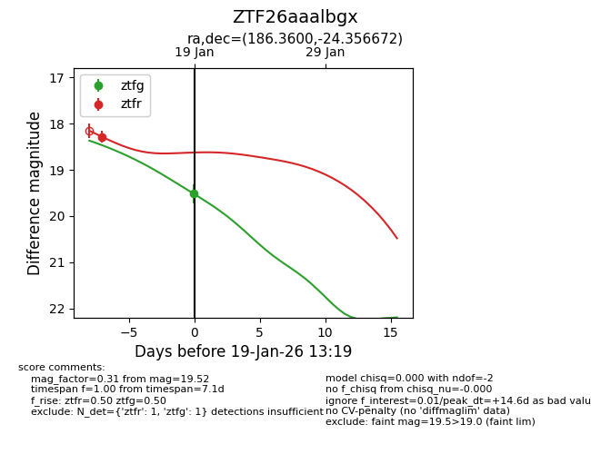
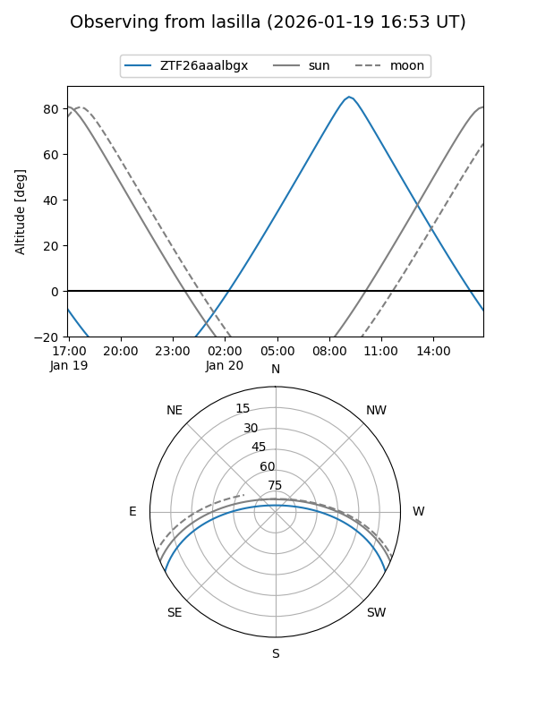
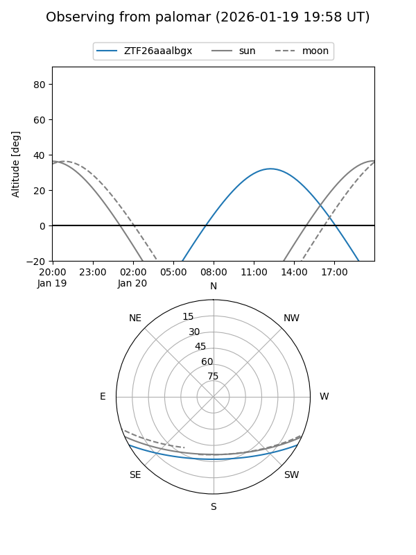
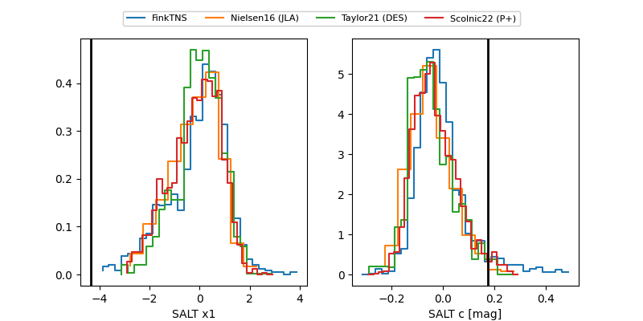

ZTF26aaalbgx
Target ZTF26aaalbgx at 2026-01-19 13:21
Aliases and brokers:
FINK: link
Lasair: link
ALeRCE: link
alt names
ZTF26aaalbgx (ztf,fink_ztf)
Coordinates:
equatorial (ra, dec) = 186.3600,-24.35667
equatorial (HMS+DMS) = 12:25:26.41,-24:21:24.02
galactic (l, b) = (295.3987,+38.13450)
Flags:
Photometry:
last ztfg=19.52, ztfr=18.28
1 ztfg, 1 ztfr detections
Lightcurve

Visibility


Additional plots
